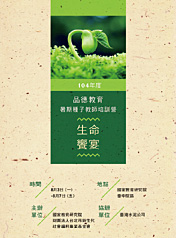
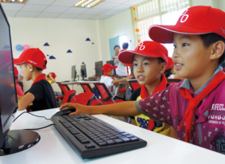
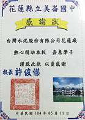
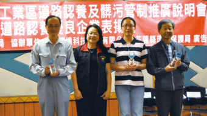

社會關懷
為維護社會公益，台泥積極參與社區發展及慈善公益團體相關活動，除對社區建設及發展支出以及對地方慈善、治安、醫療、環保、消防急難救助、民俗節慶等補助外，為扶植傳統藝術的傳承，持續捐助「財團法人辜公亮文教基金會」與「財團法人辜嚴倬雲植物保種暨環境保護發展基金會」計畫。2015年所發生之八仙粉塵氣爆案，台泥本於出一份力、盡一份心的理念，亦捐贈300萬元給予新北市政府社會局，協助災後之各項工作。
品德教育

為深化中小學教師對人生價值的探討，對當代社會所需要的公民及其應備的品德有更深入的瞭解，台泥自2009年起持續協助臺灣省教育會舉辦生命饗宴教師生活營系列活動。2015年8月協辦由國家教育研究院及財團法人台北市新生代社會福利事業基金會續辦之生命饗宴教師成長營，共80名中小學老師參加，以哲學、藝術等與人文相關的議題為主軸，聘請國內優秀講師授課，以期將所學靈活運用於平日教學上，豐富教學內容，建立學生正確道德觀。
台泥品學堂

台泥融入社區，與社區共同發展，透過「品學堂」，以「品學、品德、品質」為核心，推動課業強化、興趣養成、愛心餐點的照顧陪伴活動，讓弱勢學童安心學習、餐食無虞，幫助孩子的身心全面發展，提升生活品質。期望透過長期教育資源投注及課後照顧，關懷當地弱勢家庭之學童。「品學堂」除提供課業輔導外、更設計英語、電腦及多項才藝課程，提供多元的學習機會，同時提供愛心營養晚餐，照顧學童成長營養所需。
| 區域 | 台灣 | 廣東 | 重慶 | 四川 | 貴州 |
|---|---|---|---|---|---|
| 受益國小 | 士敏國小 | 城北小學 | 鹽井小學 | 桂興小學 | 金銀小學 |
| 受贊助對象 | 一至六年級 | 四至六年級 | 四至六年級 | 四至六年級 | 四至六年級 |
| 啟動年月 | 2012.9 | 2014.9 | 2014.9 | 2015.9 | 2015.9 |
偏鄉教育

台泥積極參與公益活動，長期關注兒童教育議題，為幫助經濟弱勢兒童，透過捐助教育部「學校教育儲蓄戶」愛心捐款，讓經濟弱勢孩童就學不中斷，幫助台東縣、彰化縣、雲林、臺北市、新竹等各級學校學生，帶給更多孩童成長學習的機會，提升競爭力。2015年亦捐贈花蓮縣花蓮市美崙地區美崙國中、東華附小、復興國小、海星國小、明恥國小、鑄強國小等六所國中小獎學金共16萬元，嘉惠160名同學。
社區回饋

台泥各廠多年來扮演著當地居民＂好厝邊＂的功能，對地方公益團體、廟宇活動等予以支持贊助，對重大天然災害或社區小型建設捐贈水泥或代金，參加各專業協會如混凝土學會及產業公會等，提供支持及參與贊助產官學相關活動。多年來從事下列工作：
- 提供居民就業
- 於區內設置各項活動設施如球場等供民眾利用
- 急難救助
- 公益捐贈
- 提供獎助學金
- 提供鄰近學校學生課後輔導
- 補助社區建設及發展支出
- 補助地方治安、環保、消防急難救助、民俗節慶等公益活動支出